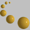

Предишна, Следваща, Съдържание
За да достигнеме до дадена страница ние можем:
- да напишем адреса на страницата
- да следваме хипервръзките към нея
Намиране на страница по нейния адрес
Адресите на Web страниците са познати като URL (Uniform Resource Locators). Те представляват пълният адрес на даден ресурс на Web и се състоят от три части:
- протокола за извличане на файла (обикновено http://).
- името на компютъра (т.е. неговият уникален IP адрес, за улеснение на потребителите обикновено е последователност от имена, разделени с точки. Реално IP адреса представлява поредица от 4 числа от 0 до 255, разделени с точки).
- името на файла и пътят към него на диска на посочения компютър( т.е. списъкът от поддиректориите, където е записан файла, разделени с /).
Посетете страницата на Университета за национално и световно стопанство, като изберете от менюто File/Open Location и въведете посочения по-долу адрес. Тъй като ще се свържете с главната страница на УНСС (home page), в посочения URL не фигурира име на файл и път към него. Не забравяйте да се върнете обратно в текущата страница, като натиснете бутона Back:http://www.unwe.acad.bg
Понякога IP адресът на компютъра може да бъде записан като последователност от числа, разделени от точки, например:
Посетете отново страницата на Университета за национално и световно стопанство, като въведете посочения по-горе числов адрес. Върнете се обратно в текущата страница с натискане на бутона Back:http://194.141.33.1
Следващия пример илюстрира пълният формат на URL, включвайки и разположението на файла в директориите на компютъра:
http://ncsc.dni.us/fun/user/tcc/cmuseum/cmuseum.htmКато използувате httpпротокол отворете страницата cmuseum.htm, която се намира в директория /fun/user/tcc/cmuseumна компютър с IP адрес ncsc.dni.us. Върнете се обратно в текущата страница с по познатия ви вече начин.
Последните примери са за използване на други протоколи (услуги) през Netscape.
Отворете следните URL за илюстрация на услугите Gopherи FTP:
gopher://cwis.usc.edugopher://cwis.usc.edu/11/Other_Gophers_and_Information_Resurses/Gophers_by_Subject
ftp://ftp.voa.gov
Хипервръзки към Web страница
За да преминете от един документ към друг чрез хипервръзка, вие трябва просто да щракнете с мишката върху маркираната дума или фраза. Обикновенно хипертекстовите връзки са оцветени в синьо и подчертани, а когато се позиционирате върху тях курсорът на мишката се превръща в посочваща ръка и в реда на състоянието се извежда URL на хипервръзката. Щракнете върху тази ХИПЕРТЕКСТОВА ВРЪЗКА.
Освен чрез маркиран текст хипервръзките могат да се реализират и чрез графични изображения. Обикновенно графичните изображения, които имат хипервръзка, са оградени в рамка. Вие можете да щракате върху тях, за да преминете към друг документ или увеличен вариант на избраното изображение. Щракнете върху тази графика:
Графичните изображения, които нямат рамка, могат да имат, но могат и да нямат хипервръзка към други документи. Това е същата графика, но без връзка.
Обърнете внимание, че при посочването на това изображение курсора не се променя в посочваща ръка.
Придвижване между Web страници.
Netscape записва всички разгледани страници в специален буфер. В случай, че се налага отново видите вече разгледана страница, е много по-бързо да се върнете назад и да я заредите от буфера, вместо да я изтегляте от оригиналния й източник, който може да е на вашия компютър, но може да е и на компютър, намиращ се в Австралия. Достъп до списъка от посетените страници през текущата сесия е възможен чрез менюто Go на Netscape .
Изберете менюто Goот главното меню на Netscape. Щракнете с мишката върху реда за УНСС. Не забравяйте отново да се върнете в текущата страница.
На екрана се изведе познатата ви страница направо от буфера на Netscape.
Трябва да имате пред вид, че ако се върнете към разглеждана страница и след това от нея преминете към други, непосещавани до момента страници, ще изгубите тази част от списъка с разглежданите страници, която се намира между текущата страница и страницата, към която сте се върнали.
Начало, Предишна, Следваща, Съдържание© Людмил Аначков.
Последна редакция: 13 Октомври 2006.